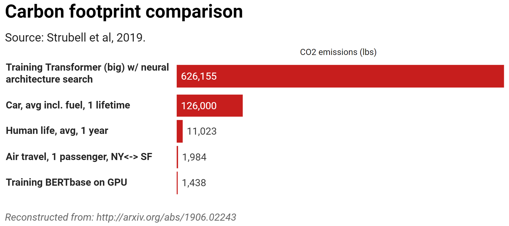
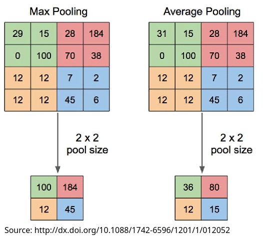
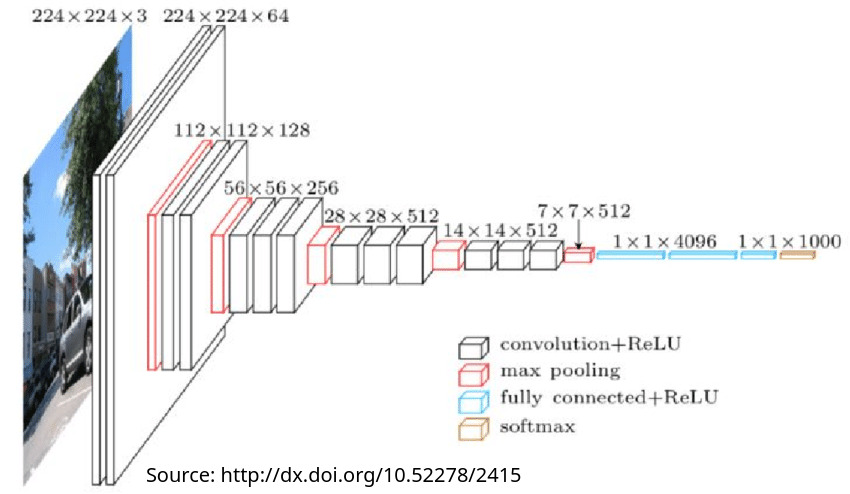

# Deep Neural Networks II: Awfulness, Advantages, and Architectures ### Will Styler - LIGN 168 --- ### Last time, we talked about the core ideas of Deep Neural Networks --- ### Neural Network Review - Artificial Neurons turn inputs into outputs according to function and bias, and output according to weights - Deep Neural Networks allow more complex decision making - Training involves doing inference, finding error, assigning that error to individual weights/biases, and updating parameters - Inference is just putting the input in, and observing the outputs --- ### Today, we'll go a bit... deeper - We know they're unreasonably powerful - It's not all good, though - ... and they're not just one model --- ### Today's Plan - What are the problems with using Deep Neural Networks? - What are the advantages of Deep Neural Networks? - Convolutional Neural Networks - Sequence Modeling and Transformers --- ## Deep Neural Network Downsides --- ### TANSTAAFL - Neural Networks are amazing, but they are not perfect - Let's talk about why! --- ### Opacity - Neural models do not reveal their features, nor their decision making - We get *no* useful information from a trained model except output - We as a species do not understand how they're actually doing the task - Being able to understand decisions in DNNs is an active area of research - ... and a great way to get every prize in CS, Math, and Cognitive Science --- ### Alignment Questions - If we don't know how it's making a decision, we can't know whether it's doing 'the right thing' - There's the possibility of unclear 'why' - Is this just rejecting mortgage applications based on the person's Facebook Friends' first names? - Is the tax audit selection model deprioritizing owners of Rolls Royce cars for audits because it learned they tend to face less scrutiny? - This is a key component of 'AI Safety' as discussed today --- ### Bias - Neural models learn the same patterns humans do - When you give a model the entire internet, you get back a racist - If we can't control the model, we can't 'counterbalance' bias - Attempts often go poorly (e.g. [Gemini Image Generator producing Black and Asian Nazi Soldiers](https://www.theverge.com/2024/2/21/24079371/google-ai-gemini-generative-inaccurate-historical)) - Your training data dictates the performance - If you don't include Nigerian English, it won't work well for Nigerian English --- ### Dual Use Problems - Models can be used for great good, or great evil - "Allow people with mobility to type" and 'Allow all phone calls, period, to be transcribed' - Many beneficial tasks are very similar to very unethical tasks - It is not possible to control what humans do with this tool - We cannot readily control people's ability to use or make these models (unlike e.g. plutonium) --- ### Data Requirements - Training Neural models requires large amounts of high quality data - "Data! Data! Data! Everything else is bullshit!" - Increasingly, people are trying to restrict previously public data - Content Cartels are especially trying to restrict the use of their work for training - Some languages may not have large amounts of extant (speech) data - Equity problems? In AI and tech?! That's unpossible! --- ### Specialized Hardware Requirements - Neural Networks don't work well on normal consumer computers - Graphics Processing Units (GPUs) used for rendering graphics turn out to be great at other matrix multiplication, too - DNNs tend to require large amounts of VRAM (video memory) - Desktop Workstations designed for this task cost upwards of $150,000 - Even a single top-of-the-line GPU (Nvidia H100) can be $30,000+ - Nvidia has a near-monopoly at the moment, in hardware and software - When you design your process around one company's software, you suffer! --- ### Energy Use - Neural Networks are incredibly energy intensive to train and use - [One credible source from 2019](https://arxiv.org/pdf/1906.02243) - Assume that in 2024, it's wildly worse - There is a movement for 'green AI', but it's slow and up against legions of shareholders ---  --- ### Expensive, Slow training - These models train slowly, even on top of the line hardware - Energy costs are very high - Creating a model often requires creating several models to find best parameter sets - 'Grid Search' is wildly expensive - Many languages around the world currently lack the fiscal and energy resources to train ChatGPT-level LLMs --- ### Gatekeeping - Hardware, energy use, and slow training makes these models easier to keep behind paywalls - Increasing pushes from the industry to use regulation to ensure only they can deploy these models - Open source/weight models are competitive, but still impossible for most people to run at home --- ### Brittlenesss - Neural Models tend to fail interestingly, and not like humans - Repeating words or phrases - Guessing low-frequency items that 'don't make any sense' - Different voices may perform wildly worse - Dialect, age, vocal pathologies, etc --- ### Adversarial Attacks - People with knowledge of the model can subvert it in interesting ways - Stimuli which are perfectly acceptable to humans can be wildly misclassified - [Stop Signs can be turned into 45mpg signs](https://arxiv.org/pdf/1707.08945) - [Some of these attacks work on humans, too](https://deepmind.google/discover/blog/images-altered-to-trick-machine-vision-can-influence-humans-too/) --- <img class="r-stretch" src="img/nn_adversarial.png"> --- ### ... but, it's not all bad! --- ## Deep Neural Network Advantages --- ### DNNs have 'won' many tasks in NLP and ML - ... but why? --- ### End-to-End Processing - We don't need to spend time thinking about features, just data and loss - This is the first kind of model which we've discovered which does this and works well - **This alone is enough to make DNNs very, very competitive** --- ### Non-Linearity - The patterns you find don't need to be remotely linear, unlike many classical approaches - You can model any continuous function with a neuron count that's sufficiently high - This is the 'Universal Approximation Theorem' - You can use *regularization* to help reduce or prevent overfitting --- ### Transfer Learning - Neural Networks can be trained on a more general task (e.g. recognizing speech) and then used on a more specific one (e.g. recognizing Afrikaans) - Fine-tuning can be helpful to improve performance with out-of-dataset tasks - Not every problem needs a Whole New Model --- ### Scalability - Often, more parameters is more better - Wav2vec2 has 317 million parameters - ChatGPT 3.5 is suspected to have ~20 billion parameters - Anthropic's Claude 3 has a rumored 500 billion parameters --- ### Structural Flexibility - You can scale DNNs very readily, from small to large - You can design neural networks with many specialized *architectures*, that is, arrangements of neurons and units - DNN architectures can be *task specific*, and improve performance markedly - This leads to... --- ## Neural Architectures --- ### Not every model is so simple <img class="r-stretch" src="img/dnn.jpg"> --- ### We've been talking about FNNs - 'Feedforward Neural Networks' - We've also been focused on 'fully connected' or 'dense' networks - **But there are many other approaches!** - ... and we're going to touch on a few of them --- ### Sometimes, you want more than one model - This can happen with encoder-decoder models - ... or with... --- ### GANs (Generative Adversarial Networks) - Often used for generating images or any other kind of 'imitation' - <https://thispersondoesnotexist.com/> - Also used for denoising audio ('imitate the original audio without noise') - Make one model which generates a thing, and another which tries to detect generated things - Training is a cat-and-mouse game --- <img class="r-stretch" src="img/nn_gan.jpg"> --- ### Another sort of 'two model' model is an 'autoencoder' - One model generates representations of the input data - Another model takes those representations and decodes them into a different form - More later! --- ### What if you want to classify, rather than create? --- ## Convolutional Neural Networks --- ### Convolutional Neural Networks (CNNs) - Primarily used for processing grid-like data (e.g., images, spectrograms) - Excel in capturing spatial hierarchies in data. - Commonly applied in image and video recognition, image classification, medical image analysis --- ### CNN Layers aren't all made equal - Fully Connected (Dense) Layers - We've already seen these! - Convolutional Layers - These do very explicit feature-finding, identifying repeating patterns - Pooling Layers - These effectively compress the data, passing through only the most important data --- ### Convolutional Layers - Each filter is a small matrix used to detect specific features (e.g., edges, textures) - Convolution operation slides the filter over the input and computes the dot product at each position - "How much does the filter 'fit' when placed here? And here? And here?" - Resulting feature map highlights areas of high similarity to the filter --- <img class="r-stretch" src="img/nn_convfilter.jpg"> --- ### Filters highlight different aspects of the image <img class="r-stretch" src="img/nn_conv_features.jpg"> --- ### Pooling Layers - Reduces the dimensionality of the prior layer, but retains the most important information - Sort of like DCT compression conceptually, although very different in practice - **Max Pooling** keeps the largest number and its position from the prior layer - **Mean pooling** keeps the average number from the prior layer ---  --- ### Pooling Layers reduce complexity, while preserving important stuff  --- ### Eventually you'd feed it into a normal FNN <img class="r-stretch" src="img/nn_conv_fullpath.jpg"> --- ### You can even get fancier! <img class="r-stretch" src="img/nn_conv_zhuetal.png"> --- ### CNNs excel at finding patterns in grid-like data - They concentrate data into meaningful patterns - They toss away less meaningful data - They feed it into a regular neural network for classification - You can find the important elements, *no matter where they occur in the grid* --- ### ... but some kinds of data aren't grids, they're sequences - For that, we need... --- ## Sequence Modeling and Transformers <img class="r-stretch" src="img/soundwave.jpg"> --- ### What if your input is a sequence of things? - Sequences of numbers (e.g. time series data) - Sequences of categories (e.g. different phonemes) - Sequences of words (e.g. sentences, books) --- ### RNNs (Recurrent Neural Networks) - Tuned for data which are sequential - These include a short term memory, so that the output of each neuron is also influenced by the *prior* output - LSTM (Long Short Term Memory) networks are a variant allow for increased memory - **These have been largely supplanted by...** --- ### Transformers - Developed by Vaswani et al. (2017) in the paper "Attention is All You Need" - Excels in understanding context and relationships in text (and other sequential data) - They are winning many sequence-based ML tasks! - Two Core Innovations - Self-Attention Mechanism - Positional Encoding --- ### Self-Attention - Allows the model to weigh the importance of words in a sentence (e.g), ignoring their position - Each input word is transformed into a Query (Q) and Key (K), which are turned into a by-word value - This is done several times in parallel ('multi-headed attention'), with each calculation finding different elements - Output is a weighted sum of values, focusing the model's attention on important words --- ### Positional Encoding - Rather than using serial processing (like RNN/LSTM), positional encodings are added to tokens to 'save' word positions - This is done using a fancy sine/cosine pattern embedding - This, with attention (which is handled by matrices), allow you to process the entire input at once, rather than running through sequentially! - **Transformers process the entire input at once!** - This makes for much more efficient training --- ### This is part of why transformers are so dominant! - They handle very long context lengths, allowing long-distance dependencies (e.g. between 'they' and 'transformers') - They scale well, with more parameters able to be added for better performance - Attention allows focus on the most important relationships in the context - You can look at *massive* context lengths, so you can interpret massive texts and questions. - They're very flexible, working in a lot of domains --- ### They do have disadvantages - They need a lot of computing and memory - Self Attention scales quadratically with context length - They need *massive* amounts of data to train - They're unreasonably good, so large numbers of tasks just become "uh, throw it into a transformer" --- ### 'Autoencoder' Structure <img class="r-stretch" src="img/nn_transformer.jpg"> --- ### We're going to see a lot of autoencoders! - "Build a representation using one chunk of the network, then interpret it using another chunk" - These are really good for changing one kind of data into another - Like, I don't know, speech into text --- ### Transformers are complicated - We could spend a quarter to understand every element - LIGN 167 goes much deeper into how they work - For now, you know enough to roughly understand the methods we use for... --- ### Neural Automatic Speech Recogntion! - Next time! --- ### Wrapping up - Deep Neural Networks have lots of problems - Deep Neural Networks are also unreasonably effective - Convolutional Networks are great for grid-based data - Transformers are great for sequence data - All of this is relevant for speech! --- <huge>Thank you!</huge>